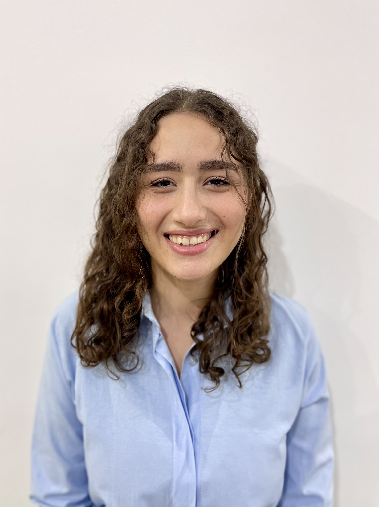

Présentation
Je m’appelle Sirine Bellaaj, étudiante en 1ᵉ année Génie Logiciel et Systèmes d’Information à l’Institut International de Technologie (IIT – Sfax).
Je m’intéresse au développement web et logiciel. Je maîtrise les bases de HTML, CSS et JavaScript, et je travaille également avec PHP et Laravel dans le cadre de projets académiques et personnels.
Mon objectif est de consolider mes compétences techniques et de développer des solutions bien structurées, en respectant les bonnes pratiques de développement.